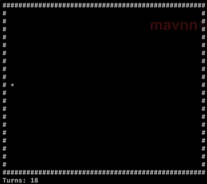

Functional Programming with F#
Table of Contents
- 1. Topics and F# cheatsheet
- 2. Exercises
- 2.1. ObservableSnake
- 2.2. ObservableSnake extensions
- 2.3. Email Sender
- 2.3.1. Run the tests!
- 2.3.2. Replace
type CsvRowwith a F# record type - 2.3.3. Remove interfaces & turn classes that implemented the SRP interfaces into functions
- 2.3.4. Write a function that contains the logic in the body of the
for row in...loop - 2.3.5. Rewrite
processCsvusingSeq.fold - 2.3.6. Check all your tests still pass (after amending them)
- 2.3.7. Let's make the
CsvRowto email message logic pluggable! - 2.3.8. Create a new
EmailToSendrecord type withaddress,subject&messagefields - 2.3.9. Write a
rowToEmailfunction of typeCsvRow -> EmailToSend - 2.3.10. Amend
sendEmailto have typeEmailToSend -> bool - 2.3.11. Use
Seq.mapbefore your fold to updateprocessCsv; you'll also need to add a newdataMapparameter - 2.3.12. Open up FunctionalTester/Program.fs and add the new
testCasebelow - 2.3.13. Sanity check!
- 2.4. Email Sender extensions
- 2.4.1. Open up the
FunctionalSenderExtentionproject - 2.4.2. Error handling
- 2.4.3. Amend
sendEmailto be a bit more "real life" - 2.4.4. Wrap your functions
- 2.4.5. Work out how to combine our new functions
- 2.4.6. Why is bind called bind?
- 2.4.7. Extract the logic in fold to a function
- 2.4.8. Rewrite the tests and add some invalid data to the csv file, and watch your safe code go to work
- 2.4.9. Add some syntax sugar
- 2.4.10. Create a class called CaptureBuilder
- 2.4.11. Initialize an a single instance for your new class
- 2.4.12. You can now write code that looks like this
- 2.4.1. Open up the
1 Topics and F# cheatsheet
1.1 Immutability
F# provides "Records" - immutable data types. This means once you have created a record, you cannot change the value of any of its fields.
As they are immutable, Records implement value based equality out of the box - if they have fields with the same values, they are considered equal regardless of whether they are the same instance.
Defining a record:
type MyRecord = { name : string age : int }
Generally record fields are given lower case names, partly to match the OCaml convention (where they originally came from) and partly to distinguish them immediately from classes.
1.2 Pure Functions (Referential Transparency)
Defining a function in F# looks like this:
let prefixName prefix name = sprintf "%s %s" prefix name
val prefixName : prefix:string -> name:string -> string
prefix and name are parameters; when space separated like this they are "curried" (from Howard Curry, not the Vindaloo type). Curried functions can be "partially applied" by supplying some but not all of their parameters.
let mister = prefixName "Mr."
val mister : (string -> string)
Curried functions are typed as functions which return functions - prefixName above has type string -> string -> string (a function which takes a string and returns a function which takes a string).
Both of the functions above are "Pure"; that means that if you give them the same input, you will always get the same output. F# doesn't enforce "pureness" in any way, but it is one of the cores of functional programming.
let impure userId name = writeToDb userId name
writeToDb userId name;; ----^^^^^^^^^ /Users/mavnn/Dropbox/@mavnn/Talks/ProgNETFunctionalProgramming/stdin(81,5): error FS0039: The value or constructor 'writeToDb' is not defined.
Impure functions by contrast, have side effects outside of the function body (such as writing to or reading from the database, reading user input, etc).
1.3 Union Types
In theory union types are unrelated to functional programming concepts - but in practice they tend to show up a lot in functional programming languages.
type ContactDetails = | EmailAddress of string | PhoneNumber of string
This represents a type which is either an EmailAddress or a PhoneNumber - but it cannot be both.
You can then "pattern match" on the union type when it is time to use it:
let sendMessage contactDetails = match contactDetails with | EmailAddress em -> sendEmail em | PhoneNumber pn -> roboCall pn
| EmailAddress em -> sendEmail em ------^^^^^^^^^^^^ /Users/mavnn/Dropbox/@mavnn/Talks/ProgNETFunctionalProgramming/stdin(85,7): error FS0039: The pattern discriminator 'EmailAddress' is not defined.
The compiler will warn if not all of the options are covered.
1.4 Higher order functions
Functional programming involves a lot of coding with, well, functions. Let's have a look at processing a list:
let processList myFunc listOfValues = listOfValues |> List.map myFunc
val processList : myFunc:('a -> 'b) -> listOfValues:'a list -> 'b list
As you can see here, myFunc (an argument passed into processList) is itself a function.
Another common technique is to wrap a function using another function:
let loggedFunction nameInLogs func = let wrapped x = printfn "Starting %s" nameInLogs let result = func x printfn "Finishing %s" nameInLogs result wrapped
val loggedFunction : nameInLogs:string -> func:('a -> 'b) -> ('a -> 'b)
The loggedFunction function will take a name to log against and a function, and return a function which does the same thing except with "logging".
2 Exercises
2.1 ObservableSnake
2.1.1 Functional console game

2.1.2 Currently very slow to redraw
2.1.3 Make the game more efficient by only updating the console where it has actually changed:
- First write a new
changesBetweenTurnsfunction that takes a new and oldGameDataand returns only the changed locations - Use this new function to create
drawTurnChangefunction (which will be of typeGameData -> GameData -> unit) - Make use of the
Seq.pairwisefunction to updaterunwithdrawTurnChangeinstead ofdrawTurn - Try the game and see how much faster it responds
2.1.4 Replace the run function with the code below
- Predict what it will do before you you it!
drawTurn start let directions = Observable.ToObservable( Seq.concat [seq { yield Stay }; Seq.unfold inputUnfolder Stay], Reactive.Concurrency.NewThreadScheduler()) let gameTicks = Observable.Interval(TimeSpan.FromSeconds 1.) let tickWithDirection = Observable.WithLatestFrom(gameTicks, directions, fun _ dir -> dir) tickWithDirection |> Observable.ToEnumerable |> gameTurns |> Seq.pairwise |> Seq.iter drawTurnChange
2.1.5 See if you can add a new stream of events to the game:
- Randomly appearing food to eat (
apples, maybe?) - Logic could be added in
gameTurnsfunction or as a newObservable - Be careful if you use
Observable.ToObservable! If you use it with an eager sequence, it will start publishing as fast as your code will run. A possible work around is usingObservable.Interval(docs at http://reactivex.io/documentation/operators/interval.html) and thenObservable.map
2.2 ObservableSnake extensions
Congratulations! You've finished the core material for this section, feel free to either help other people out or have a go at the challenges below.
2.2.1 Make the snake get longer each time the food is eaten
2.2.2 Add a "death" mechanic for when the snake hits itself or a wall
2.3 Email Sender
2.3.1 Run the tests!
dotnet run -p FunctionalTester/FunctionalTester.fsproj
2.3.2 Replace type CsvRow with a F# record type
It should end up with three fields:
- name
- emailAddress
- message
2.3.3 Remove interfaces & turn classes that implemented the SRP interfaces into functions
You should end up with three functions:
readCsvof type#Stream -> seq<CsvRow>sendEmailof typestring -> string -> string -> boolprocessCsvof type(#Stream -> seq<CsvRow>) -> (string -> string -> string -> bool) -> #Stream -> int
2.3.4 Write a function that contains the logic in the body of the for row in... loop
This function will be called with each individual CsvRow record; it should end up with a type of CsvRow -> int, and return 1 if an email is sent or 0 if it isn't
2.3.5 Rewrite processCsv using Seq.fold
Hint: use your function from above, and an initial state of 0
2.3.6 Check all your tests still pass (after amending them)
You'll need to replace references to CsvReader and CsvProcessor with calls to your new functions.
2.3.7 Let's make the CsvRow to email message logic pluggable!
2.3.8 Create a new EmailToSend record type with address, subject & message fields
2.3.9 Write a rowToEmail function of type CsvRow -> EmailToSend
2.3.10 Amend sendEmail to have type EmailToSend -> bool
2.3.11 Use Seq.map before your fold to update processCsv; you'll also need to add a new dataMap parameter
2.3.12 Open up FunctionalTester/Program.fs and add the new testCase below
testCase "Test mapping" <| fun () -> let inputRow = { name = "Bob" emailAddress = "bob@example.com" message = "Hello Bob!" } let result = rowToEmail inputRow Expect.equal result.address inputRow.emailAddress "Email address is transferred unchanged" Expect.equal result.subject "Hi Bob!" "The name is used to create the subject" Expect.equal result.message inputRow.message "Use the message as is"
2.3.13 Sanity check!
You should now have a processCsv function that looks something like the one below:
let processCsv read send mapData input = read input |> Seq.distinct |> Seq.map mapData |> Seq.fold (fun count data -> if send data then count + 1 else count) 0
That looks a little shorter than our previous interface and class definitions, but there is something else important to note. If you have any type annotations on your version of the function, remove them now.
You'll notice that the resulting function signature is very generic:
val processCsv :
read:('a -> #seq<'c>) ->
send:('d -> bool) -> mapData:('c -> 'd) -> input:'a -> int
when 'c : equality
Suddenly testing here has become a lot easier; we don't need a csv reader to test, we can pass in any function that takes an input and returns a sequence. We don't need a mock email sender, as the send function can be any function that returns a bool.
2.4 Email Sender extensions
Congratulations, you've covered all of the core topics for this section!
Now we start the brain stretching!
In reality, most of these steps can fail; if they do, we want to know about it, but we do not want the pipeline to "break" - so throwing an exception is not going to help.
We want a process that looks like this:
2.4.1 Open up the FunctionalSenderExtention project
There's tests already set up in FunctionalTesterExtention; this is just to make sure we're starting on the same page. Take a moment to compare this to the code you ended up with in the previous section - it should look similar.
2.4.2 Error handling
We do not want any of our functions to throw; instead we'll use the Choice<'a, 'b> to return either a Choice1Of2<'result> if the operation is successful, or a Choice2Of2<Exception> if the operation fails.
Add this error handling function to your code:
let capture func x = try func x |> Choice1Of2 with | e -> Choice2Of2 e
val capture : func:('a -> 'b) -> x:'a -> Choice<'b,exn>
2.4.3 Amend sendEmail to be a bit more "real life"
Make sendEmail return the email address sent to if it succeeds, or throw on failure.
2.4.4 Wrap your functions
In diagram above, you can see that three of your functions have potential failure cases:
- readCsv
- rowToEmail
- sendEmail
Wrap each of them using the capture function to give you:
- safeReadCsv
- safeRowToEmail
- safeSendEmail
2.4.5 Work out how to combine our new functions
We now need to rewrite processCsv with our safe functions; you'll notice the types no longer match up. This is another moment of higher order functions to the rescue. We're going to create a function which knows how to take one of our "safe" Choice<'a, Exception> results, unwrap 'a and then pass 'a into the next "safe" function.
Write a method called bind. Here is a let declaration with types to get you started:
let bind (func : 'a -> Choice<'b, exn>) (m : Choice<'a,exn>) = ...your body here...
We'll also need a way (normally called return) to take a "normal" value and wrap it into a Choice<'a, exn>. In our case we don't even need a function for this: it is exactly what Choice1Of2 does.
2.4.6 Why is bind called bind?
You may know that let in f# is referred to as a "let binding" - it "binds" a value to a name.
So why is the bind function traditionally called bind? Look at the example below:
let safeProcessCsv read send mapData input = read input |> bind (fun rows -> rows |> Seq.distinct |> Seq.map mapData |> Seq.fold (fun count data -> if send data then count + 1 else count) 0 |> Choice1Of2)
|> bind (fun rows -> -------^^^^ /Users/mavnn/Dropbox/@mavnn/Talks/ProgNETFunctionalProgramming/stdin(115,8): error FS0039: The value or constructor 'bind' is not defined. Maybe you want one of the following: Bid
You can see that the bind function allows us to "name" the rows result from a "safe" read function.
2.4.7 Extract the logic in fold to a function
Now that you want a safe send function, your fold logic will become more complicated. Extract the anonymous inline function and give it a name. Rewrite it so that it can cope with new safeSendEmail function.
You'll want to define a type to store the state of the fold (should contain a list of email addresses and a list of expections).
2.4.8 Rewrite the tests and add some invalid data to the csv file, and watch your safe code go to work
2.4.9 Add some syntax sugar
It turns out the pattern of using bind to unwrap values is so common, F# provides a feature called computational expressions to make such code easier to read.
They can do a lot of other things as well, but let's create the simplest possible version.
Computational Expressions are defined by creating a class; that class must have methods on with particular names and signatures.
2.4.10 Create a class called CaptureBuilder
- The syntax for creating a class is:
type MyClassName (one) = // constructor logic member this.MyMember (two) = printfn "I'm an instance method on a class!" one + two static member Static () = "A static method - shocking!"
- It needs to have members:
Bind with signature member Bind : (value : Choice1Of2<'a, exn> * continuation : 'a -> Choice<'b, exn>) -> Choice<'b, exn>
Return with signature member Return : (value : 'a) -> Choice<'a, exn>
Use your existing bind function to build the Bind method.
2.4.11 Initialize an a single instance for your new class
let capture = CaptureBuilder()
2.4.12 You can now write code that looks like this
let safeProcessCsv read send mapData input = capture { let! rows = read input rows |> Seq.distinct |> Seq.map mapData |> Seq.fold (fun count data -> if send data then count + 1 else count) 0 |> Choice1Of2 }
That let! there is where your bind code is being called. You can find out (much) more
about Computational Expressions at F# for Fun and Profit.